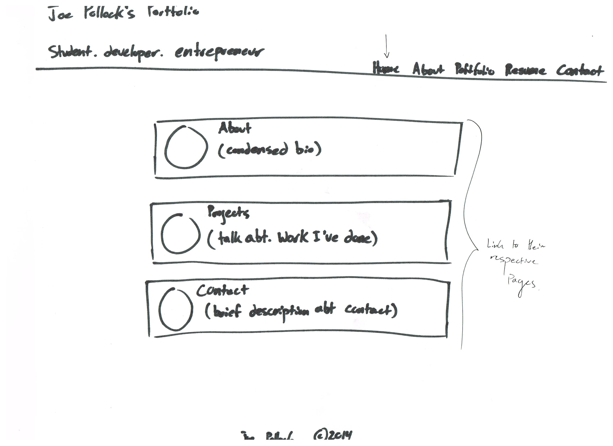
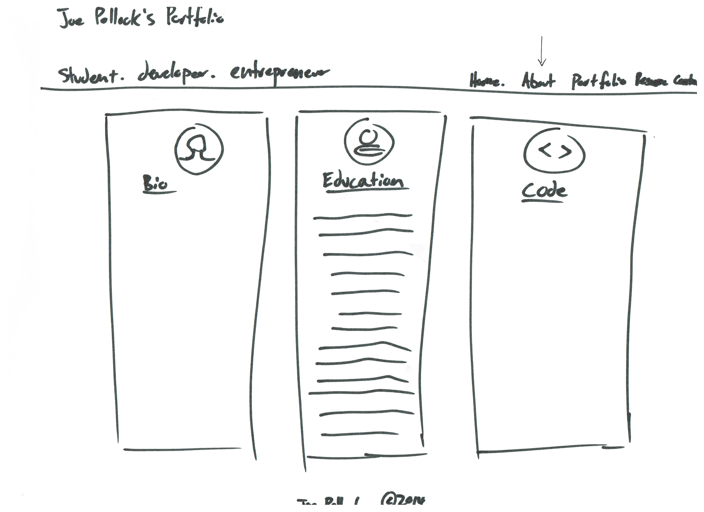
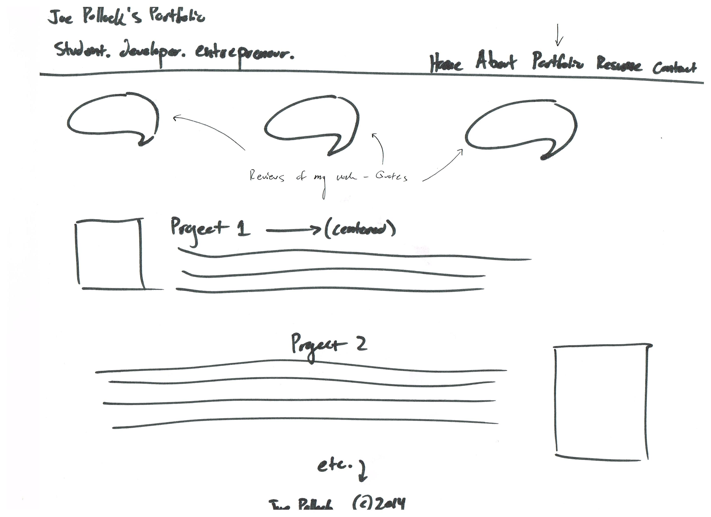
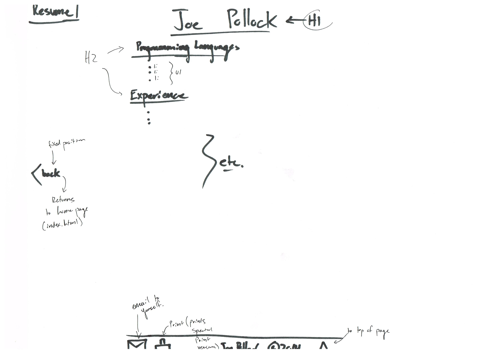
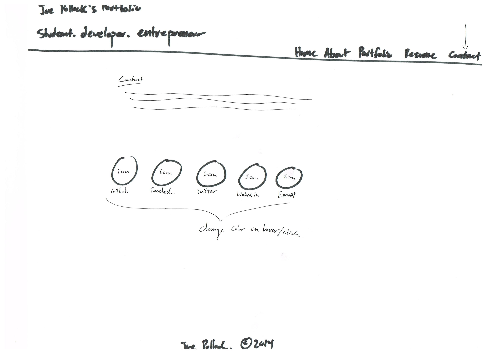

Each section in the homepage will have a brief (condensed version) that has an icon and links to the page with the full description. The sections I will include are: About, Projects, and Contact.
The "About Me" page will have three columns each with an icon at the top, a section title (h2) and a paragraph. The three different columns will be a bio, a description of my education thus far, and a description of my history of coding.
This will be a description of the work I have done (including links), with reviews people have given me. It will link to websites I have worked on and other projects. I will put as much code as possible on github for others to view.
I saw this on one of my friend's websites. He made an interactive HTML/CSS resume. I thought it was a fantastic idea and I plan to do the same. It will be a more comprehensive resume, which will include the options to email it, and print a more condensed version of it. This is the only page that will have a different header and a different footer. I chose to do this to reduce distractions so whoever is viewing my resume can focus on just the resume.
This page will include a quick blurb that encourages the reader to contact me and then provide a variety of different outlets to do so. The ones I listed are the ones I will use currently. I will add more as I see fit (i.e. an eLance or other).
